This is a level/map editor for the game Subspace/Continuum. Subspace/Continuum is a multiplayer asteroids-like game with a huge cult following. This level editor is superior to all the others out there for many reasons:
Each map is called a level and is stored in an .lvl file. These can be loaded and saved from the file menu.
Each level is made up of:
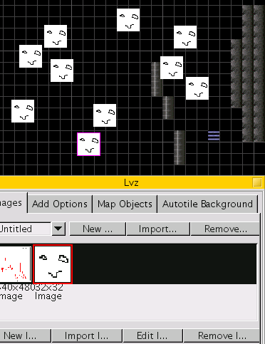
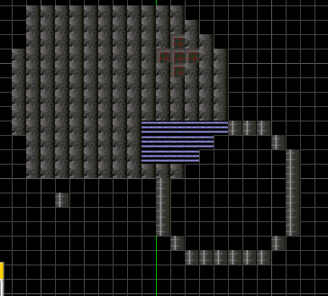
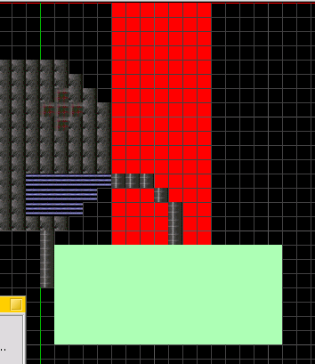
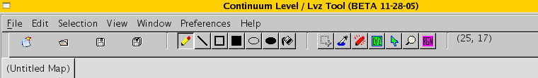
File contains save, open, new, and close options. These are self explanatory.
The first four icons are New, Open, Save, and Save as. They operate on the file you currently have open (or want to open/create).
NOTE: Each tool below can be used with the left or right mouse button. Using the left mouse button on the map will draw with the tile with a red border selected in the Tileset window, and using the right mouse button draws with the tile outlined in blue.
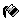
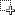
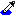
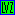
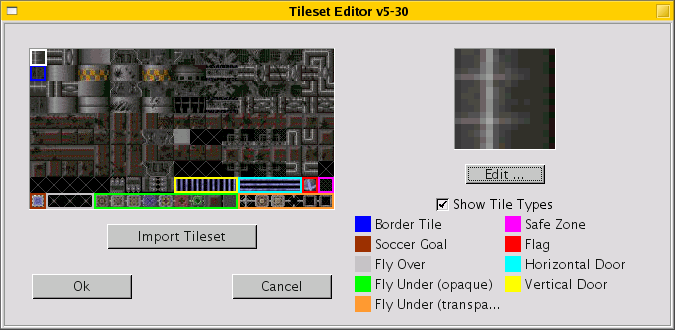
This option in the Edit menu brings up a screen where you can edit your tileset (the set of tiles you can draw with). If you click on a tile it will show up (larger) in the area to the right.
The white border shows the tile you've currently selected. All of the other colors signal places for special tiles (the legend for them is on the right).
'Import Tileset' lets you choose another file containing the tileset you want. Tilesets are just images, divided into little 16-pixel squares, so any image would do.
You can edit a tile using the built-in image editor by clicking on the edit button.
There are a few options here (in the Selection menu). None of these affect LVZ images. Only tiles.
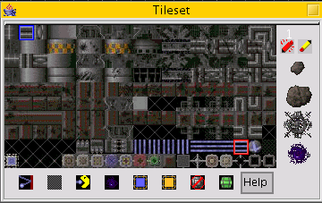
The red box and the blue box show the tiles you select with your left and right mouse buttons, respectively. Some of the tiles have special meaning, but see the editing tileset window about that. The tiles to the side are bigger, built-in tiles. They can only be drawn with the pencil tool.
The tiles on the bottom have special meanings, too. There is a help button to the left with explanations for each of these.
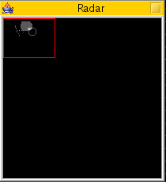
This is pretty simple. It's the overall view of the map (with less detail), with a red box outlining where the map is currently being shown on screen.
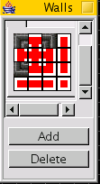
This is useful when you want to draw a border or a wall, it's more complicated than a straight line, and you have specific tiles for your corner piece, vertical piece, horizontal piece, or similarly bordering pieces. In the default tileset, there is at least one set of tiles which fit nicely in a wall. To use it:
When you are finished, you can use the wall drawing tool (the red pen which is the third from the left in the right-most grouping of icons). Use it like you would the pencil tool, and connecting tiles will automatically be changed so that they seemlessly connect.
The 'Add' and 'Delete' buttons in the walls window add or delete your defined walls in tabs above the tile image.
The LVZ window deals with LVZ images, which are special images that float at any pixel independently of tiles. There are four tabs to this window:
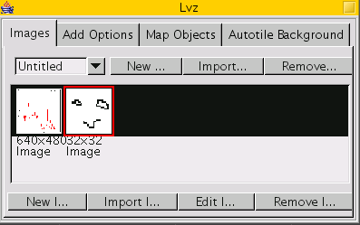
Here you can choose which LVZ image you wish to paste to your map. (The LVZ tool, the icon 4th from the right of the right-most icon grouping, is used to paste lvzs.) You can import LVZs from .lvz files, remove them, and create new ones. You can select your current lvz from the drop down menu on top of the window.
You can create a new lvz image, import one from some image file, edit it, or remove it with the buttons on the bottom.
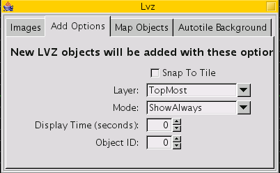
These options apply to the next LVZ image you paste to the map. Snap to tile means its X and Y coordinates will line up with the tiles (on the grid). You may choose the layer to add the LVZ image to, which becomes important in gameplay when you wish to specify what the LVZ image masks and what covers the LVZ image.
The Display time of an LVZ is how long it appears before it disappears. The Object ID is simply a number you give it to keep track of it.
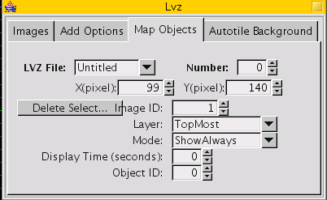
These options apply to one selected LVZ image. (If you have many LVZ images selected, it will apply to one at random.)
objon
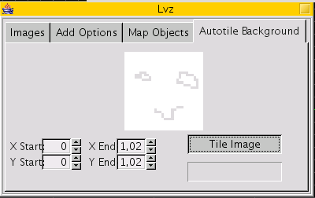
This option tiles an image you select from the Images tab across the background within the coordinates you specify.
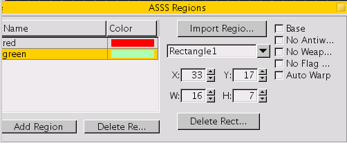
Regions are areas in the map with special properties. They can be drawn with the region tool (right-most icon with "RGN"). Import Region allows you to load regions from either an .rgn file or an eLVL file.
Each region is a set of rectangles which occupy some amount of space in the map. Each rectangle is given a name by the program (like Rectangle2) and has the color given to it by its region. Each region has one color (but this color is only used to distinguish regions from each other and doesn't show up in gameplay). On the right side there are 5 properties (like "No Weapons") which can be set or unset. The dimensions of the rectangle can be changed in the textboxes right next to that.
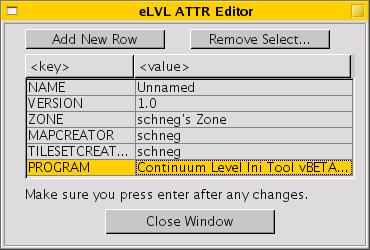
eLVL files are extended .lvl files. They hold extra data (like region information) which some clients or servers (or other map editors) may not support. During saving the map editor will give you an option to throw away this information to have a more compatable saved file.
You may edit the file attributes (like the title of the map) in the Edit menu in "Edit eLVL attributes".